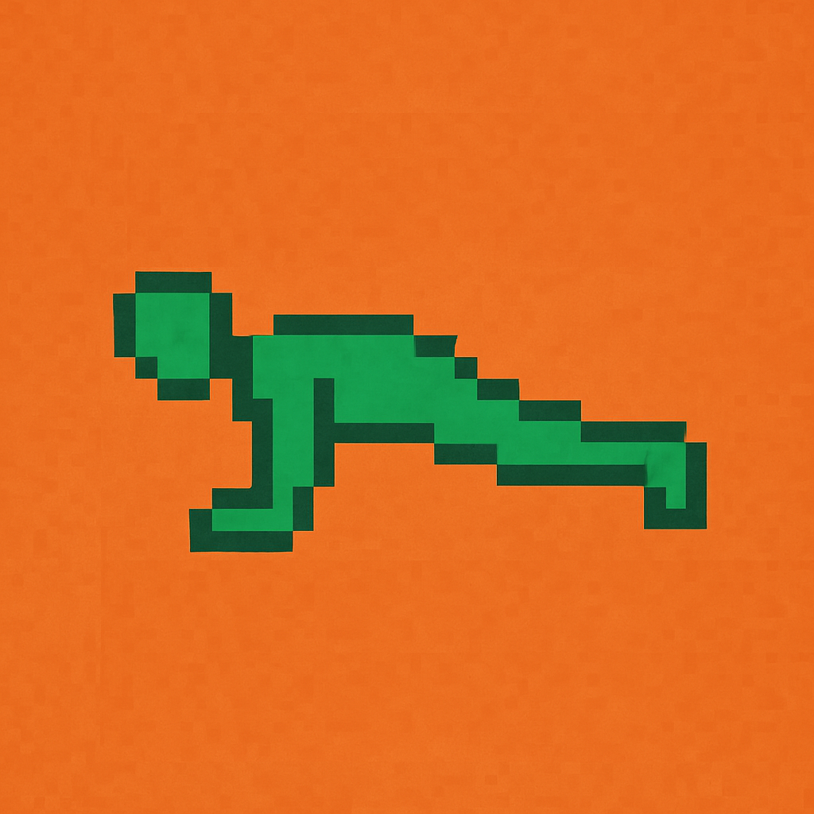

Klucz służy tylko do tej synchronizacji. Nie wpisuj hasła Google. Klucz pozostaje w pamięci tej sesji i nie trafia do kodu aplikacji. Po ponownym otwarciu może być potrzebny ponownie.
Możesz wrócić do przerwanego treningu. Czas nadal biegnie.